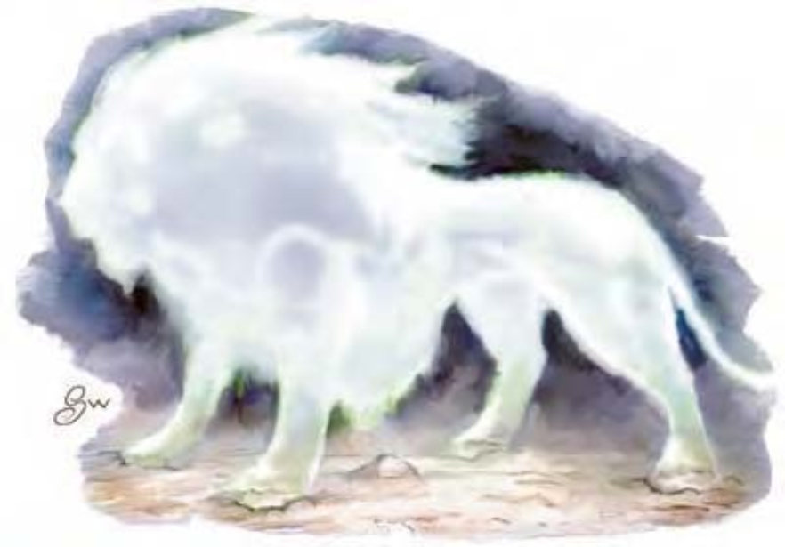

| 资料栏位 | 地狱猫 (Hellcat) 大型异界生物 (邪恶、外界、守序) |
|---|---|
| 生命骰 | 8d8+24 (60HP) |
| 先攻 | +9 |
| 速度 | 40英尺 (8格) |
| 防御等级 | 21 (-1体型、+5敏捷、+7天生)、接触14、措手不及16 |
| 基本攻击/擒抱 | +8 / +18 |
| 攻击 | 爪抓+13近战 (1d8+6) |
| 全力攻击 | 2爪抓+13近战 (1d8+6) 及 啮咬+8近战 (2d8+3) |
| 占据/触及 | 10英尺 / 5英尺 |
| 特殊攻击 | 精通擒抱、猛扑、耙抓 1d8+3 |
| 特殊能力 | 伤害减免5/善良、黑暗视觉60英尺、光线下隐形、火焰抗力10、灵敏嗅觉、法术抗力19、心灵感应100英尺 |
| 豁免 | 强韧+9、反射+11、意志+8 |
| 属性 | 力量23、敏捷21、体质17、智力10、感知14、魅力10 |
| 技能 | 平衡感+16、攀爬+17、躲藏+13、跳跃+21、聆听+17、潜行+20、侦察+13、游泳+17 |
| 专长 | 闪避、精通先攻、追踪 |
| 环境 | 巴托九狱 |
| 组织 | 单独、成双或兽群 (6-10) |
| 挑战级数 | 7 |
| 宝藏 | 无 |
| 阵营 | 总是守序邪恶 |
| 进化 | 9-10HD (大型) ; 11-24HD (超大型) |
| 等级修正值 | ― |
带着优雅与力量，该生物无声无息地现身于道路前方。外型与巨狮无异，但表面闪烁着炫目光线与激烈火花。躯体似乎不是以血肉构成，而是以能量构成。
凶猛的魔鬼猫，亦称彼吉拉魔，移动时几乎不会发出声音，无时无刻寻找着作恶良机。他们喜欢伏击或以智取对手。虽然外型看起来像虚体生物，但地狱猫拥有实体躯体，物理攻击可以伤害他们。地狱猫以天生的心灵感应能力彼此沟通或与遭遇生物沟通。地狱猫约9英尺长，约900磅重。
战斗地狱猫以利爪与尖牙在战斗中占有一席之地。他们喜欢像狮子一样跳到对手身上。在计算伤害减免时，地狱猫的天生武器与持有武器都视为邪恶阵营与守序阵营。
精通擒抱（特异）：当地狱猫啮咬到对手时，即可利用即时动作进行啮咬攻击（视为擒抱），且不会引发对方借机攻击。如果啮咬成功，则可定住对手进行“耙抓”。
猛扑（特异）：如果地狱猫向对手冲刺，就算已经做出移动动作，仍可进行全力攻击（包括两次耙抓）。
耙抓（特异）：攻击加值+13近战、伤害1d8+3。
光线下隐形（特异）：处于光线足以让人类视物的区域时，地狱猫是隐形的。若处于光线更弱的区域，则30英尺范围内可看到他们模糊的发亮轮廓（若对方拥有昏暗视觉，则为60英尺范围）。魔法黑暗可遮掩此发亮外型。
技能：地狱猫在进行“聆听”、“潜行”检定时具有+4种族加值。